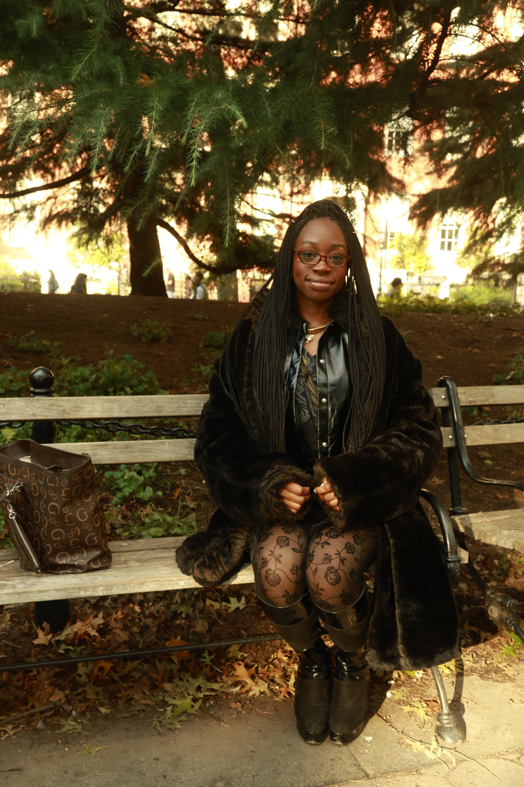

Welcome to My Digital Hub
Hi there! I'm Belle Mbaezue — a multidisciplinary thinker, creative, and public policy & computer science student at NYU. This website is a snapshot of my work, passions, and collaborations. Whether you're here to learn more about my projects, connect professionally, or just explore, I'm glad you're here.
Who I Am
I was born in the South, raised on dreams, dance floors, and determination. I'm passionate about using technology and policy to build practical, people-centered solutions to complex problems. My academic journey is rooted in intersectionality — bridging computer science with social impact, art, and sustainability.
Visit my student showcase at Body & Pole
What I Do
- Creative Technologist: I design and develop digital projects that intersect storytelling, ethics, and accessibility.
- Public Policy Advocate: I'm deeply invested in shaping equitable systems through data, design, and dialogue.
- Club Leader: As president of NYU's Future Fashion Group, I lead initiatives to reduce waste and promote conscious style through events like the Swap Shoppe and creative upcycling workshops.
- Content Creator: From editing vlogs to writing poetry, I use digital media to share, reflect, and connect.
What You'll Find Here
- Resume: Learn more about my education, work experience, and skills.
- Projects: See a selection of my academic, creative, and coding projects.
- Clubs: Discover my leadership work in student organizations like Future Fashion Group.
- Contact: Want to collaborate or just say hi? Get in touch!
Why I Made This Site
This site is more than just a portfolio — it's a reflection of my growth, grit, and goals. I wanted a space that I could call my own, where I can celebrate my wins, share my journey, and invite others along the way.
Majors/Minors
- Majors: Computer Science, Public Policy
- Minors: Film, Creative Writing
Skills
| Skill | Experience |
|---|---|
| Java | 3 Years |
| HTML/CSS | 1 Year |
| Python | 2 Years |